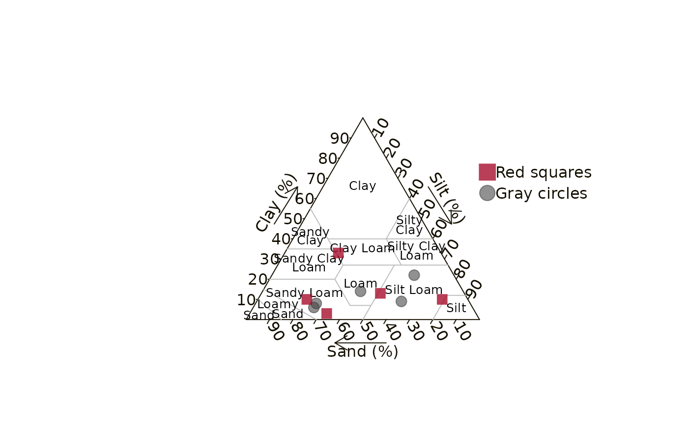

Add a legend to the texture triangle
Arguments
- x, y
X and Y coordinates used to position the legend. Location may also be specified by setting
xto a single keyword from the list"bottomright","bottom","bottomleft","left","topleft","top","topright","right", and"center".- box
Boolean.
TRUEto draw a box around the legend. Defaults toFALSEfor no box.- legend
Character vector to appear in legend.
- color
Character vector of the color of the points.
- pch
Numeric vector of plotting symbols. See
graphics::points()for options and details.- size
Numeric expansion factor for points.
- vertical_spacing
Numeric spacing factor for vertical line distances between each legend item.
- ...
Other arguments passed to
graphics::legend().
Examples
texture <- washi_data |>
dplyr::select(
sand = sand_percent,
silt = silt_percent,
clay = clay_percent
)
make_texture_triangle(body_font = "sans")
# Add gray points
add_texture_points(
tail(texture, 5),
color = "#3E3D3D90",
pch = 19
)
# Add red points
add_texture_points(
head(texture, 5),
color = "#a60f2dCC",
pch = 15
)
# Add legend
add_legend(
legend = c("Red squares", "Gray circles"),
color = c("#a60f2dCC", "#3E3D3D90"),
pch = c(15, 19),
vertical_spacing = 2
)

# Note the text appears squished in this example since the width, height,
# and resolution have been optimized to print the figure 6 in wide in the
# report.